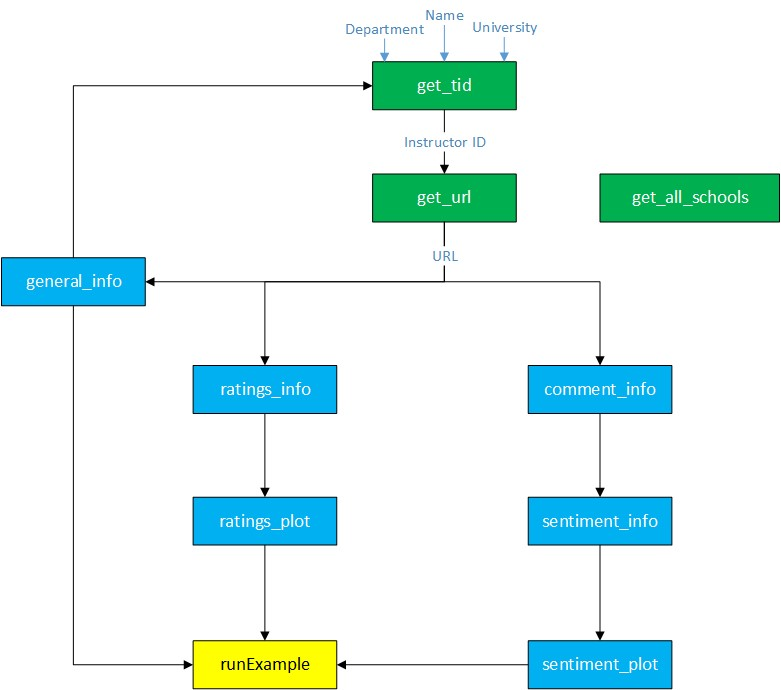
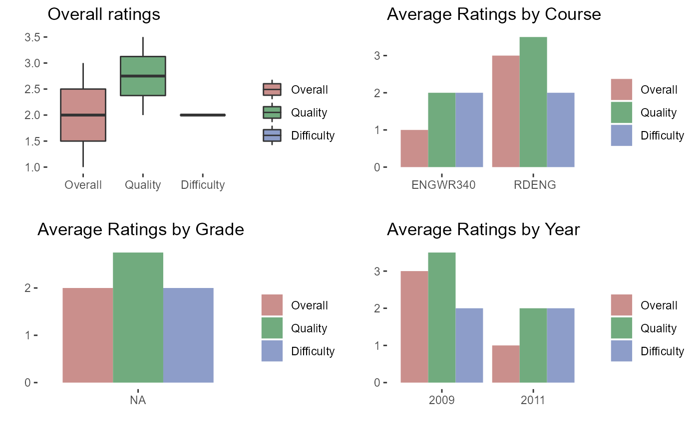

vignettes/ProfRate-in-detail.Rmd
ProfRate-in-detail.RmdIn the README file you learned HOW to use the package, here, we get into the details of this package and its applications.
As a student you might be interested to know more about a specific instructor, the characteristics, difficulty of the course being taught by that professor, and the overall teaching quality.
This package makes a user-friendly UI to extract a summary of the information for an instructor of interest and visualizes them.
This package addresses the following areas:
* What are the positive, negative aspects of an instructor? * What are the most frequent words used to describe an instructor? * How difficult are the courses taught by an instructor? * How is the overall teaching quality? * How the performance of an instructor has changed over time? * How do the grades of students affect the rating of an instructor?
You can install this package from GitHub:
### install.packages("devtools")
devtools::install_github("m-fili/ProfRate")Or download the ProfRate and install it locally using:
install.packages("file_path_to_target_package/ProfRate", repos=NULL, type="source")Note that file_path_to_target_package is the placeholder and needs to be replace by the correct relative path on your machine.
## Background The website that we used for this project is RateMyProfessor. This website collects comments from students regarding the teaching quality, difficulty, and many more aspect of a course being taught by a specific professor. Our Package uses the information in this website to create a summary of teaching quality for an instructor of interest.
First, we explain the flowchart of our functions and how they work with each other. This workflow is shown in the figure below:
knitr::include_graphics('Functions.jpg')
As shown above, there are 10 functions overall in this package. The first three packages in green generates the URL to start the whole scraping procedure. The functions in blue rectangle, are the body of the package responsible for scraping, summarization, and visualization. The function at the bottom in yellow rectangle, is the Shiny app.
First a URL is generated using the name of the instructor, department name and the institution name. Then the comments and ratings are scraped from the webpage, and summarized and plotted. All the generated outputs then feed into the ShinyApp. In the follwoing the functions are explained in detail.
get_all_schools
Examples:
get_all_schools('Iowa State University')
#> [1] "https://www.ratemyprofessors.com/campusRatings.jsp?sid=452"
get_all_schools('MIT')
#> [1] "https://www.ratemyprofessors.com/campusRatings.jsp?sid=580"general_info
get_tid function.Examples:
general_info("https://www.ratemyprofessors.com/ShowRatings.jsp?tid=342455")
#> $name
#> [1] "John Bush"
#>
#> $department
#> [1] "Mathematics department"
#>
#> $university
#> [1] "Massachusetts Institute of Technology"
general_info("https://www.ratemyprofessors.com/ShowRatings.jsp?tid=744853")
#> $name
#> [1] "Mergel Sarah"
#>
#> $department
#> [1] "History department"
#>
#> $university
#> [1] "George Washington University"get_tid
get_tid(name = 'Brakor')
#> # A tibble: 3 x 4
#> tID name department university
#> <dbl> <chr> <chr> <chr>
#> 1 1031282 Katie Brakora Biology department University of California Ber~
#> 2 1948643 Karl Brakora Engineering department Grand Valley State University
#> 3 1829876 Katherine Brakora Biology department Saint Mary's College of Cali~
get_tid(name = 'Brakor', department = 'Biology')
#> # A tibble: 2 x 4
#> tID name department university
#> <dbl> <chr> <chr> <chr>
#> 1 1031282 Katie Brakora Biology department University of California Berkeley
#> 2 1829876 Katherine Brakora Biology department Saint Mary's College of Californ~
get_tid(name = 'Brakor', department = 'Biology', university = 'Berkeley')
#> # A tibble: 1 x 4
#> tID name department university
#> <dbl> <chr> <chr> <chr>
#> 1 1031282 Katie Brakora Biology department University of California Berkeleyget_url
get_tid, but generates the final URL. Under the hood it uses get_tid to first extract the tid number and then it generates the URL.Examples:
get_url(name = 'Brakor')
#> [1] "https://www.ratemyprofessors.com/ShowRatings.jsp?tid=1031282"
#> [2] "https://www.ratemyprofessors.com/ShowRatings.jsp?tid=1948643"
#> [3] "https://www.ratemyprofessors.com/ShowRatings.jsp?tid=1829876"
get_url(name = 'Brakor', department = 'Biology', university = 'Berkeley')
#> [1] "https://www.ratemyprofessors.com/ShowRatings.jsp?tid=1031282"comment_info
comment_info(url = "https://www.ratemyprofessors.com/ShowRatings.jsp?tid=1031282", y = 2000)
#> course year
#> 1 IB131 2012
#> 2 AA 2010
#> 3 IB131 2008
#> 4 INTGB131L 2007
#> comments
#> 1 She has high demands to memorize an incredible amount of information and on the actual test she actually only focuses on so few. For example, you are "supposed" to know the attachment points of functions of every muscle in the human body, but barely even showed. This is literally the most memorization of any class yet at berkeley
#> 2 She is a great teacher. her way of teaching is excellence i like her v much
#> 3 Katie was always willing to help if there was anything she wasn't sure of the answer. Very encouraging and had great tips for how to study and succeed in the course.
#> 4 Katie Brakora is one of the GSA's for Anatomy Lab (INTEGBIO 131L). She comes unprepared, is very unhelpful and her quizzes are extremely difficult (she asks questions about the minutia of the material, you never know what MINOR detail out of the reading she quiz on). She never seems to know the answer to any questions asked in class.
#> thumbsup thumbsdown
#> 1 0 0
#> 2 0 0
#> 3 0 0
#> 4 0 0
comment_info(url = "https://www.ratemyprofessors.com/ShowRatings.jsp?tid=1129448", y = 2000)
#> course year
#> 1 ENGWR340 2011
#> 2 RDENG 2009
#> comments
#> 1 His class isn't too hard, but he's is not helpful at all. He never talks about how to writer, like how to create scenes or characters or the business, but instead he talks about himself a lot. What's he's editing or working on. A lot of time is wasted in class.
#> 2 AT FIRST I HAD MY DOUBTS BUT AFTER ALL HE IS A GREAT TEACHER VERY HUMOROUS AND EASY TO TALK TO.
#> thumbsup thumbsdown
#> 1 0 0
#> 2 0 0sentiment_info
Example:
sentiment_info(url = "https://www.ratemyprofessors.com/ShowRatings.jsp?tid=69792", y = 2009, word = 'Positive')
#> Joining, by = "word"
#> # A tibble: 28 x 2
#> # Groups: word [28]
#> word n
#> <chr> <int>
#> 1 best 4
#> 2 great 4
#> 3 enjoyed 3
#> 4 helped 2
#> 5 helpful 2
#> 6 nice 2
#> 7 amazing 1
#> 8 avid 1
#> 9 awesome 1
#> 10 enjoyable 1
#> # ... with 18 more rows
sentiment_info(url = "https://www.ratemyprofessors.com/ShowRatings.jsp?tid=69792", y = 2000, word = 'Negative')
#> Joining, by = "word"
#> # A tibble: 9 x 2
#> # Groups: word [9]
#> word n
#> <chr> <int>
#> 1 bad 1
#> 2 bleed 1
#> 3 conservative 1
#> 4 hate 1
#> 5 loose 1
#> 6 rejects 1
#> 7 sour 1
#> 8 stress 1
#> 9 worthless 1
sentiment_info(url = "https://www.ratemyprofessors.com/ShowRatings.jsp?tid=69792", y = 2009, word = 'Tags')
#> Joining, by = "word"
#> # A tibble: 6 x 2
#> # Groups: tags [6]
#> tags n
#> <chr> <int>
#> 1 Inspirational 3
#> 2 Respected 3
#> 3 Gives good feedback 2
#> 4 Graded by few things 1
#> 5 GRADED BY FEW THINGS 1
#> 6 Participation matters 1Examples:
sentiment_plot(url = "https://www.ratemyprofessors.com/ShowRatings.jsp?tid=69792", y = 2009, word = 'Positive')
#> Joining, by = "word"ratings_info
Examples:
ratings_info("https://www.ratemyprofessors.com/ShowRatings.jsp?tid=1129448", y=2009)
#> $n
#> [1] 2
#>
#> $ratings
#> Year Course Overall Quality Difficulty Take_again For_credit Textbooks
#> 1 2011 ENGWR340 1 2.0 2 NA NA FALSE
#> 2 2009 RDENG 3 3.5 2 NA NA TRUE
#> Attendance Grade
#> 1 NA <NA>
#> 2 NA <NA>
#>
#> $summary
#> avgRating avgQuality avgDifficulty percentTakeAgain percentForCredit
#> 1 2 2.75 2 0 0
#> percentTextbook percentAttendance
#> 1 50 0ratings_plot
ratings_plot("https://www.ratemyprofessors.com/ShowRatings.jsp?tid=1129448", y=2009)
We included different tests for each function to make sure it is working properly. The coverage of the package is 98%, as the time of writing this report. Here are the set of things in general that is checked for each function:
Each function is documented thoroughly. The set of information included in each function is as below:
The website is launched and includes the references and other useful information on how to use this package.
In this package, there is a function named runExample that the user can utilize to show all the functionalities discussed so far through an interactive App.
Here are the future steps to make this package more comprehensive.
Adding Campus Evaluation to the App
Incorporating correlation Analysis & outlier detection